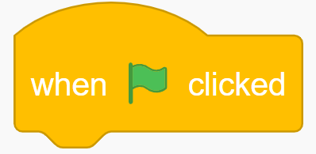
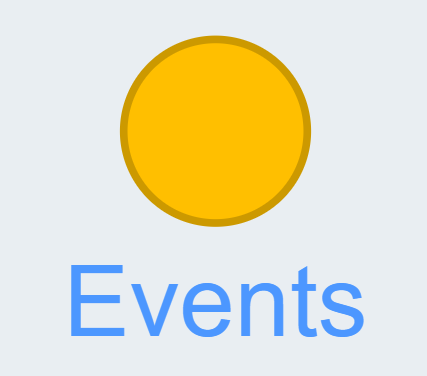

1) Self-Introduction Using a Talking Sprite
Create a talking sprite animation that gives an introduction about you when you click the sprite.üëâ
Steps:
1. Click on See Inside.
View

2. Select the block  from 
View
3. Add the block
 from
from  and
attach it
to
the block.
and
attach it
to
the block.
Add multiple of these to show messages after some intervals.
View
4. Take one more block.
View

5. Since we want to repeat the animation, let's take block from the
 section.
section.
View

6. Repeat
 the
block 10 times.
the
block 10 times.
View
7. To add a bit of delay, take block from
View

2) Exercise Routine
In this activity, you will be creating an exercise routine. When you run the code, it should prompt the user to click on the sprite to start the exercise. Once the user clicks on the sprite, you need to change the costumes to show the exercise and display a message once it is done.üëâ
Steps:
1. Click on the Costumes tab to see all the available costumes.
View
2. Select the block from .
View

3. Now select the block from and attach it to the block.
ANd then from the dropdown, select “anina pop stand.” This will ensure that the sprite is always in a standing position when the code is executed.
View
4. Now show a message prompting the user to click on the sprite to start the exercise. The message should be shown for 2 seconds.
View

5. Now select block from the section.
View
6. Add block to keep changing the costumes 5 times with a delay.
View

7. Show a message when the exercise is done.
View
3) Moving Fish (Additional Activity)
In this activity, you will create an underwater environment with a fish moving left and right using arrow keys.üëâ
Steps:
1. Click on choose a backdrop.
View
2. Select Underwater 1.
View

3. Click on choose a sprite.
View
4. Select Fish Sprite.
View

5. Delete previous costumes, duplicate the fish sprite, and flip it horizontally.
View

6. Select from to detect left and right arrow key press. And then From the dropdown, change it left arrow and right arrow.
View

7. Switch costumes based on the key press.
View
8. Select block from
 section.
section.
View

Right now it is moving beyond edges. In the coming classes, we will see how we can stop it from going beyond the edges.